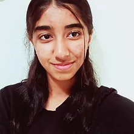

Arpita Shanbhag
Contact: shanbhag1239@mydusd.org
Arpita Shanbhag is a hopeful, young individual who wants to earn a Bachelor of Science degree in Computer Science to make a difference in the industry and consistently strives to work towards this long-term goal through her steps and actions in high school that will lead up to college and eventually take her into the engineering workforce. Thank you for taking the time to read today, and I hope you explore the rest of the website!
Career Goals: In a male-dominated industry of engineering, the presence of women is greatly neglected and is much needed because even women have astonishing ideas that deserve the world’s acceptance. Arpita Shanbhag strives to bridge the gender divide in the era of technological development. everyday, she works on making the gap closer day-by-day until this separation no longer exists. She encourages her female peers to pursue the engineering pathway in school and clubs and writes content about the inequality in the engineering workforce, not only for women but for everyone. Being a woman in this field during this period poses some hardships, and Arpita wants to ensure that females in future generations will not have to receive the same discrimination she does today. When she grows up, she wants to be in a supportive community along with her fellow supportive female software engineers.
Achievements: Ever since high school has started Arpita has reached nationals in AoPS Problem Solvers, reached state level in VEX Over Under 2023-2024, and received a 4.14 W GPA. As for activities, Arpita has tutored elementary school students in mathematics, science, and literature. In Girls4Sports, Arpita led a group of 4 middle school students to raise fundraisers. Together, they raised more than 65 pieces of sports equipment and toys. She is also the treasurer of Science Olympiad and has helped raised over $40 through Panda Express.
Abilities and Work Skills: Arpita has learned that she is dedicated to what she does in every single activity, no matter how difficult the task may be. Taking a difficult class taught her to be resilient and to persevere through hardships. It also made me build problem solving skills that she often uses when she needs to solve challenging problems. Being part of clubs that require She has not had official work, she has tutored kids and that has taught her to cooperate with others, patience, and create original content.
Strengths and Personal Qualities:
| Characteristic | Experience |
|---|---|
| Self-Motivated | Arpita is self-motivated and wants to work on herself, even if nobody asks or suggests her to do so. She enjoys participating in math competitions and competing with like-minded peers. She wants to enroll in challenging courses that go beyond standard curriculum requirements, which is why she is currently enrolled in Honors Chemistry and Advanced English I. Furthermore, she actively seeks internships to engage in during the summer, indicating her self-motivation and development. |
| Team Player | Arpita has worked with many people throughout her life in various events. She is involved in various community service activities that require teamwork. She collaborated with over 10 teenagers and adults to prepare certificates for the National North South Foundation Finals 2023 for over 300 children. She also tutors elementary school students in mathematics and wanted to help others succeed academically. Arpita has competed in various robotics competitions as well as Hackathons, demonstrating her strong teamwork skills. |
| Practical | Arpita can translate ideas from her brain into actionable plans that have been implemented in real life. For instance, in Girls4Sports, as a Youth Advisory Board Advisor, she was able to lead a group of middle schoolers to set up fundraisers at their schools, and together they raised over 65 pieces of sports equipment and toys for PARCA! Her ability to manage projects, coordinate events, and collaborate with others highlights her practicality. |